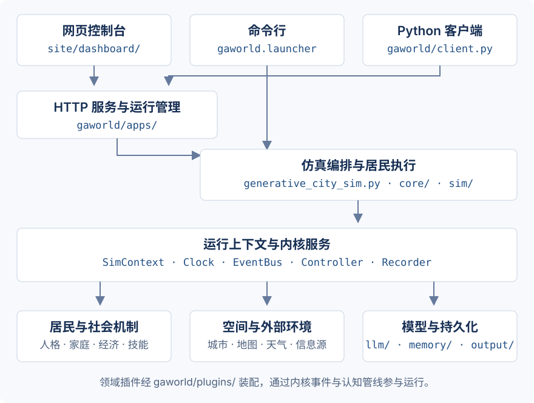
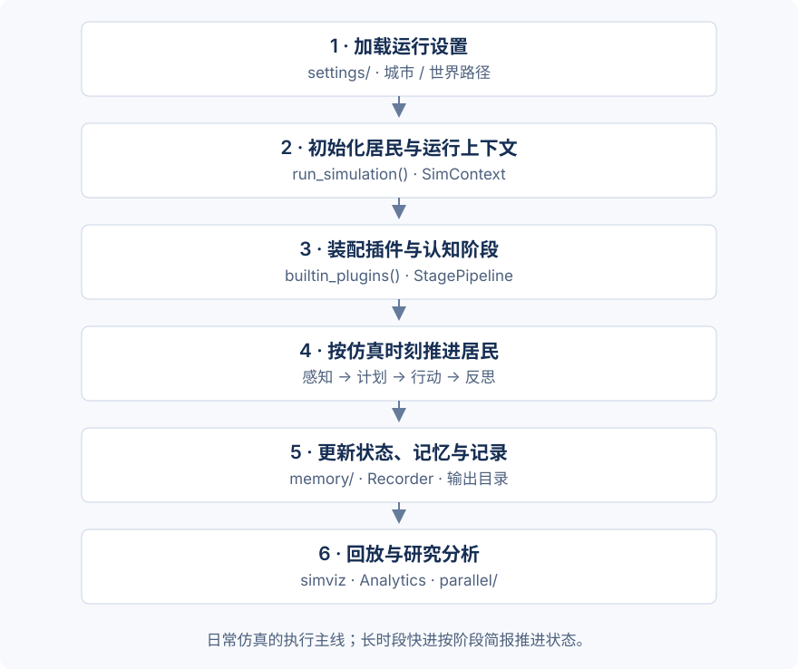

代码结构与阅读路径¶
GAWorld 的运行实现集中在 gaworld/，控制台界面位于 site/。阅读代码时，可以先从入口找到对应服务或仿真流程，再进入内核、领域模块和数据输出。
仓库目录¶
GAWorld/
├── pyproject.toml # 包元数据、依赖与 gaworld 命令入口
├── generative_city_sim.py # 子命令分发与仿真编排
├── gaworld/
│ ├── launcher.py # 定位或初始化工作区，启动命令
│ ├── client.py # Dashboard 的 Python HTTP 客户端
│ ├── apps/ # HTTP 服务、路由与后台任务
│ ├── settings/ # 配置默认值、模型设置与运行覆盖
│ ├── kernel/ # 时钟、事件总线、控制器、记录器、插件注册
│ ├── core/ # 居民数据视图与并发执行工具
│ ├── sim/ # 认知管线与行为计算
│ ├── plugins/ # 内置插件的装配入口
│ ├── city/ # 城市包创建、选择与居民管理
│ ├── world/ # 地图、空间感知、交通与场所机制
│ ├── worlds/ # 用户世界及其数据组织
│ ├── env/ # 环境状态与事件
│ ├── memory/ # 记忆、经历、日程与状态持久化
│ ├── llm/ # 模型提供商、调用与路由
│ ├── skills/ # 技能读取、挂载与经验提炼
│ ├── work/ # 工作任务、市场、队列与适配器
│ ├── research/ # 研究方案、协议、执行、判定与报告
│ ├── parallel/ # 平行世界运行、参数扫描与配对分析
│ ├── interview/ # 采访名单、问答、统计与会话
│ ├── accounts/ # 账号、权限、归属与用量
│ └── cluster/ # 分布式节点与同步
├── site/
│ ├── dashboard/ # 控制台页面和 JavaScript
│ ├── simviz/ # 仿真轨迹回放
│ ├── documentation/ # 在线文档源文件
│ └── home/docs/ # 构建后的在线文档
├── data/ # 城市、初始居民与技能等输入
├── output/ # 运行、记忆、研究与分析产物
├── tests/ # 单元测试与集成测试
├── scripts/ # 数据处理、部署与辅助工具
└── docs/ # 项目原始说明与技术材料
居民机制还分别实现在 personality/、cognition/、social/、family/、economy/、organizations/、events/、policy/、travel/ 和 infosources/ 等子包中。人口合成与群体模拟对应 population/ 和 group/；人物蒸馏对应 persona/；多人共玩对应 multiplayer/。
模块如何连接¶


GAWorld 的入口、运行服务与领域模块。箭头表示主要连接关系；具体请求与执行步骤见下文。点击图片查看完整尺寸。¶
gaworld/plugins/__init__.py 集中装配内置插件。领域机制通过插件订阅内核事件、提供感知内容或处理动作；内核维护通用服务和插件生命周期。
三个容易混淆的目录¶
目录 |
负责什么 |
典型操作 |
|---|---|---|
|
可复用的城市数据包 |
从地名创建城市、添加居民、选择城市 |
|
仿真中的物理空间机制 |
位置、移动、交通、场所容量 |
|
用户世界与数据归属 |
创建世界、保存居民副本与配置 |
控制台通过 apps/world_paths.py 解析当前世界的数据路径。新增读取或写入结果的接口时，从这里确认路径归属。
一次仿真怎样执行¶


日常仿真的执行主线。第 4、5 步随仿真时刻重复；长时段快进使用阶段简报推进状态。点击图片查看完整尺寸。¶
进入工作区。
gaworld命令由gaworld.launcher:main接收，定位工作区后转交给其中的generative_city_sim.py。准备运行。 配置、城市输入和居民数据参与
run_simulation()的初始化，运行服务汇集到SimContext。装配机制。
builtin_plugins()提供内置插件；注册表处理插件装配。StagePipeline.from_config()根据配置生成居民步骤序列。推进日常行动。 主循环调用
step_pipeline.run_step(agent, step_ctx, sim_ctx)。阶段按顺序处理感知、计划、移动、行动、反思与状态更新。保存结果。 记忆存储与记录器写入相应运行目录，供控制台、回放与研究分析读取。
阶段顺序、钩子与内核服务见 架构与可扩展性。完整 run_simulation() 编排及部分内置阶段定义位于根目录入口文件；阶段序列的解析与调度位于 gaworld/sim/pipeline.py。
从哪个文件开始读¶
你想理解的内容 |
源码入口 |
接着看 |
|---|---|---|
安装后 |
||
控制台如何处理请求 |
||
配置从哪里来 |
||
居民一步如何推进 |
||
插件如何加入运行 |
||
世界路径和结果如何保存 |
||
平行世界如何运行和比较 |
||
研究协议如何执行和判定 |
准备修改一个功能¶
调整控制台页面： 从
site/dashboard/中对应页面及脚本进入，再沿请求路径查看gaworld/apps/。新增接口时同步维护 OpenAPI 描述。增加仿真机制： 在
gaworld/下实现领域逻辑，通过插件接入事件、感知或动作处理。操作示例见 编写插件。改变认知步骤： 查看
StagePipeline与CONFIG["pipeline"]["agent_step"]，确认阶段之间传递的step数据。增加测量指标： 检查
research/measures.py的可测量目录，以及相应的结果读取与判定逻辑。处理输出或权限： 先检查当前世界路径、账号上下文与结果归属，再接入对应的读写流程。